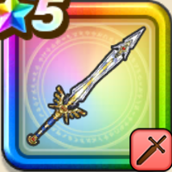

勇者のつるぎ
攻略班 10点 / 勇者の軌跡全身全霊斬りギガクラッシュギガバーストいきなり会心必中のかまえブレイブゾーン命の大樹に選ばれし者
くわしい特徴
【レベル別習得スキル】 Lv1【バトマス】攻撃力+5 Lv1【パラディン】守備力+5 Lv1【二刀】二刀流時の斬撃・体技によるダメージ+5% Lv10勇者の軌跡（消費MP：最大MPの10%）自身にレインボーフォース(敵ごとに有効な属性が選択される)を付与し、再度行動する(戦闘中1回のみ使用可能) Lv20全身全霊斬り（消費MP：58）敵1体にガード・みかわしされない直撃する威力1100％の斬撃ダメージを与える Lv30ギガクラッシュ（消費MP：62）敵全体に800％(メタル系に+120)のデイン属性斬撃ダメージを与え、HP30％以下の敵を崩壊させる。敵の数が多いほど条件が緩和(最大60%) Lv35虫系へのダメージ+5% Lv40????系へのダメージ+5% Lv45攻撃力+12 Lv50ギガバースト（消費MP：最大MPの30%）敵1体にガード・みかわしされない3000~4000%のデイン属性斬撃ダメージが直撃する(自身を含むゾーン中の味方2人以上で使用可能) Lv50いきなり会心必中のかまえ（消費MP：15）戦闘開始時に斬撃・体技ダメージが上がり、会心の一撃になる。さらにガードやみかわしされなくなる効果を付与する(効果1ターン) Lv50ブレイブゾーン（消費MP：最大MPの2%）戦闘開始時に領域「ブレイブゾーン」を発動。敵の斬撃・体技・呪文・ブレス耐性を強制的に減らし味方が確率でゾーン状態になる Lv50命の大樹に選ばれし者（消費MP：最大MPの2%）戦闘中自身の直撃が3回発生すると領域「ブレイブゾーン」を発動(ゾーン状態中は一部の特殊効果が1.5倍になり職業毎のボーナスが発生) 【限界突破スキル】 1凸スキルの斬撃・体技ダメージ+7% 2凸スキルの斬撃・体技ダメージ+7% 3凸スキルの斬撃・体技ダメージ+7% 4凸スキルの斬撃・体技ダメージ+7%